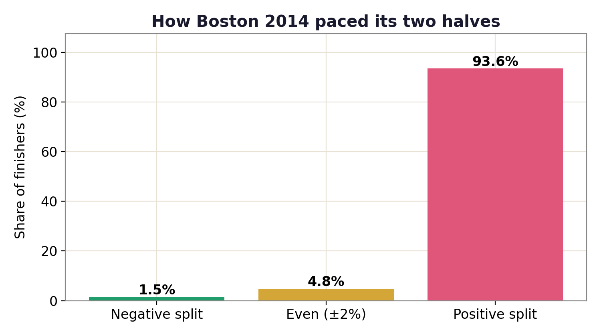
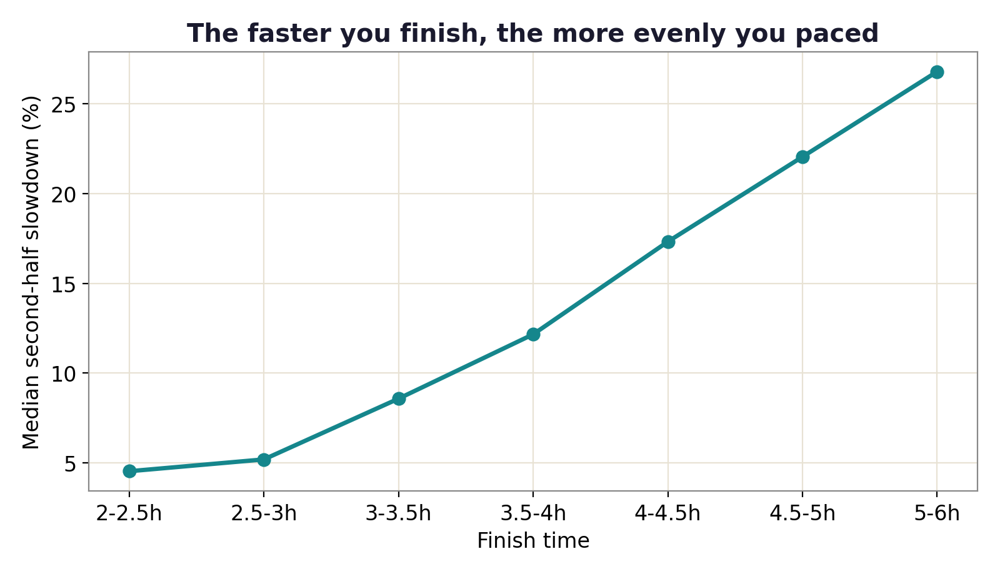
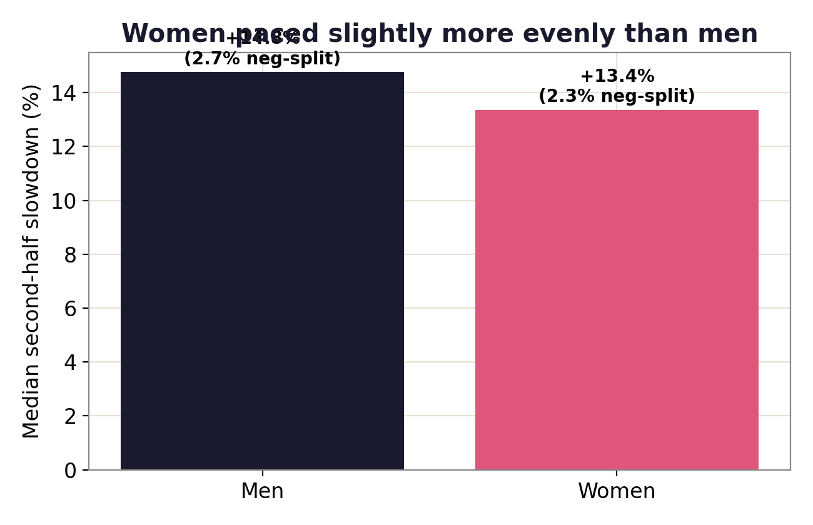

Data story · 31,912 marathon finishers
The Negative-Split Myth
Every coach says to run the second half faster than the first. So how many marathoners actually pull it off? I checked an entire Boston field.
The advice everyone gives
"Negative split" is the most repeated piece of marathon wisdom there is: hold back early, finish faster, and you'll run your best time. It's great advice. The question I wanted a real number for is simpler. Out of thousands of ordinary runners, how many actually do it?
What I did
I took the official results of the 2014 Boston Marathon, 31,912 finishers with timing-mat splits, and split each runner's race in two: the time to the half-marathon mark, and the time from there to the finish. If the second half was faster, that's a negative split.
Almost nobody speeds up
The verdict is blunt. Only 2.5% of finishers ran a negative split. Another ~4% paced within 2% of even. The other ~94% slowed down. The typical runner's second half was 14% slower than the first.


The better you are, the more evenly you run
The slowdown isn't the same for everyone. Sub-3-hour runners gave up only about 5% in the back half; runners over 4 hours lost more than 21%. Even pacing isn't just good advice. It's a signature of fitness and experience.

A small gender gap
Women paced slightly more evenly than men. A median slowdown of about 13.4% versus 14.8%, echoing a pattern other researchers have found across many races.

The findings
- Only 2.5% of 31,912 finishers ran a true negative split; ~94% slowed down.
- The median runner's second half was 14% slower than the first.
- Pacing tracks ability: sub-3h ≈ +5% slowdown vs over-4h ≈ +22%.
- Women paced a touch more evenly than men (≈13.4% vs ≈14.8% median slowdown).
So is the advice wrong?
Not at all. It's just hard. The data says holding back early is exactly what separates the strong finishers from the strugglers, and almost no one errs on the side of going out too slow. If anything, the takeaway is humbling: next time, start slower than feels right. You're very unlikely to overdo it.
fetch_data.py + analyze.py in the repo. One race-day caveat: weather and course (Boston's downhill start, late uphills) shape the exact numbers, but the lopsided pattern holds everywhere it's been studied.